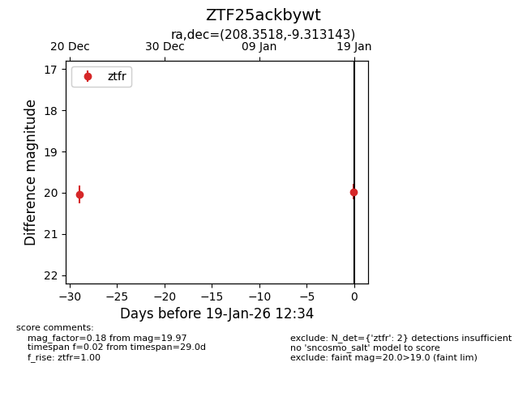
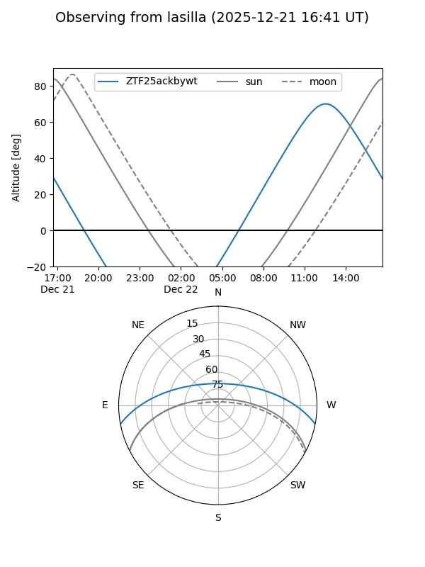
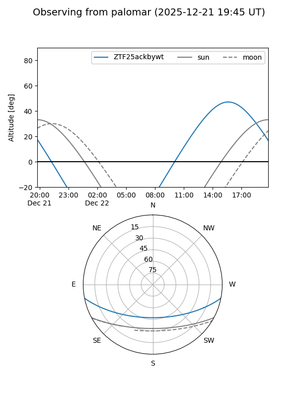

ZTF25ackbywt
Target ZTF25ackbywt at 2025-12-21 15:02
Aliases and brokers:
FINK: fink-portal.org/ZTF25ackbywt
Lasair: lasair-ztf.lsst.ac.uk/objects/ZTF25ackbywt
ALeRCE: alerce.online/object/ZTF25ackbywt
alt names
ZTF25ackbywt (ztf,fink_ztf)
Coordinates:
equatorial (ra, dec) = 208.3518,-9.31314
equatorial (HMS+DMS) = 13:53:24.43,-09:18:47.32
galactic (l, b) = (327.4596,+50.58384)
Flags:
Photometry:
last ztfr=20.05
1 ztfr detections
Lightcurve

Visibility


Additional plots